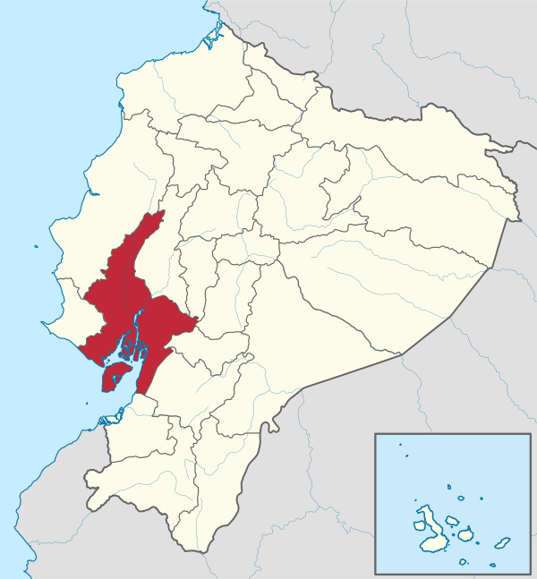
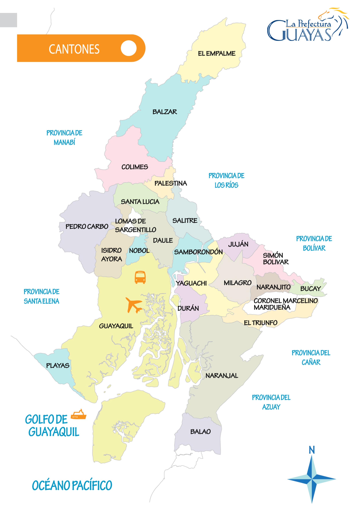

Guayas, oficialmente Provincia del Guayas, es una de las 24 provincias que conforman la República del Ecuador, localizada en la región litoral del país, al suroeste del mismo.
Su capital es la ciudad de Guayaquil. Es el mayor centro comercial e industrial de Ecuador. Con sus 4,3 millones de habitantes, Guayas es la provincia más poblada del país y contiene el 24,5% de la población de la República.
La provincia toma el nombre del río más caudaloso e importante de su territorio, el río Guayas. Con sus 2,5 millones de habitantes (más del 68% de la población provincial), la ciudad de Guayaquil no es sólo la ciudad más poblada de la provincia, sino también la segunda más poblada de Ecuador.
Los territorios actuales del Guayas fueron dominados en la época precolombina, por los huancavilcas y varias otras tribus. Con la llegada de los españoles y su conquista se buscó fundar en estos territorios una ciudad que sirva de puerto
, aunque se presentó en varias ocasiones la resistencia de los nativos, impidiendo la conquista de estos territorios. Varias veces intentaron la colonización, hasta que en 1538 fue fundada la ciudad de Guayaquil.
El territorio actual del Guayas estuvo comprendido en el antiguo corregimiento guayaquileño, y luego en la gobernación colonial de Guayaquil. Después de las guerras de independencia contra España, se formó la república guayaquileña, que se uniría después a la Gran Colombia, pasando a llamarse Departamento de Guayaquil.
Luego de la separación de la Gran Colombia y la formación de la República del Ecuador, la región se dividió en las actuales provincias de Manabí, Los Ríos, El Oro, Galápagos y Guayas. Recientemente, en el 2007, se separó de este territorio la provincia de Santa Elena.
Guayas se encuentra dividida políticamente en 25 cantones, de las cuales se derivan 50 parroquias urbanas y 29 parroquias rurales.2Las actividades principales de la provincia son la industria, ya que se encuentra el puerto y las mayores fábricas en Guayaquil, el sector agropecuario en la vida rural; y, el turismo, principalmente por sus famosas playas y festividades montubias.
Según el último ordenamiento territorial, la provincia del Guayas pertenecerá a una región comprendida también por las provincias de Bolívar, Los Ríos, Santa Elena y Galápagos. La conformación de las nuevas entidades administrativas de Ecuador están aun en proceso diplomático, aun no se unifican, y el plazo de 8 años a partir de la constituyente de 2008, está en proceso de extensión.

